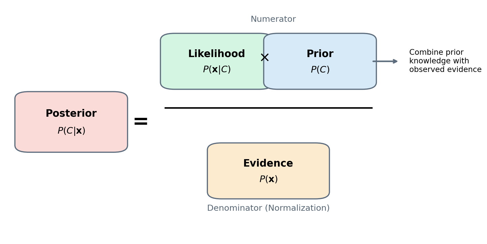

flowchart LR A["Training Data"] A --> B["Estimate Prior Probabilities"] A --> C["Estimate Likelihood of Each Feature"] B --> D["Bayes' Theorem"] C --> D D --> E["Posterior Probability for Each Class"] E --> F["Choose Class with Highest Probability"]
9 Chapter – Naive Bayes
9.1 Introduction
Most classification algorithms learn a decision boundary that separates observations belonging to different classes. Logistic Regression estimates a linear boundary, Decision Trees recursively partition the feature space, and Support Vector Machines maximize the separation margin between classes.
Naive Bayes follows a completely different philosophy.
Instead of learning a decision boundary directly, it estimates the probability that an observation belongs to each possible class and assigns the observation to the class with the highest probability.
Suppose we want to classify an email as either Spam or Not Spam. Rather than asking
Where should the decision boundary be?
Naive Bayes asks
Given the words contained in this email, how likely is it that the email belongs to each class?
If the estimated probabilities are
| Class | Posterior Probability |
|---|---|
| Spam | 0.94 |
| Not Spam | 0.06 |
the classifier predicts
\[ \hat y = \text{Spam}. \]
This probabilistic perspective makes Naive Bayes one of the simplest and fastest supervised learning algorithms.
The method is based on Bayes’ Theorem, one of the fundamental results in probability theory, which provides a mathematical framework for updating probabilities when new evidence becomes available.
The adjective naive refers to the simplifying assumption that all predictor variables are conditionally independent given the class label. Although this assumption is rarely satisfied exactly in real-world datasets, the resulting classifier often performs surprisingly well, especially for high-dimensional problems such as text classification, document categorization, spam detection, and sentiment analysis.
The general workflow of the algorithm is illustrated below.
Unlike many machine learning algorithms, Naive Bayes does not require an iterative optimization procedure. During training, the algorithm simply estimates a small number of probabilities from the training data. Prediction then consists of applying Bayes’ Theorem to compute the posterior probability of each candidate class.
Because of this simplicity, Naive Bayes offers several practical advantages.
- Extremely fast training.
- Very fast predictions.
- Performs well with relatively small datasets.
- Naturally produces probabilistic predictions.
- Particularly effective for high-dimensional data, such as text documents.
However, these advantages come at the cost of a strong modeling assumption: the predictor variables are assumed to be conditionally independent given the class. The implications of this assumption will be discussed later in this chapter.
In the next section, we introduce Bayes’ Theorem, which provides the probabilistic foundation of every Naive Bayes classifier.
9.2 Bayes’ Theorem
Bayes’ Theorem is one of the fundamental results in probability theory. It provides a mathematical framework for updating probabilities when new evidence becomes available.
Suppose we want to determine the probability that an observation belongs to a particular class after observing a set of predictor variables.
Rather than asking
What is the probability of observing these features given the class?
Bayes’ Theorem answers the inverse question
Given the observed features, what is the probability that the observation belongs to a particular class?
This relationship is expressed mathematically as
\[ P(C \mid \mathbf{x})=\frac{P(\mathbf{x}\mid C),P(C)}{P(\mathbf{x})}, \]
where
\(P(C \mid \mathbf{x})\) is the posterior probability, representing the probability that an observation belongs to class \(C\) after observing the predictor vector \(\mathbf{x}\).
\(P(\mathbf{x} \mid C)\) is the likelihood, representing the probability of observing the predictor variables assuming that the observation belongs to class \(C\).
\(P(C)\) is the prior probability, describing our belief about class \(C\) before observing any predictor variables.
\(P(\mathbf{x})\) is the evidence (or marginal probability), which normalizes the posterior probabilities so that they sum to one.
The relationship among these quantities is illustrated below.
Show code
import matplotlib.pyplot as plt
from matplotlib.patches import FancyBboxPatch
fig, ax = plt.subplots(figsize=(11,5.5))
ax.set_xlim(0,1)
ax.set_ylim(0,1)
ax.axis("off")
def add_box(x,y,w,h,color,title,text):
rect = FancyBboxPatch(
(x,y),
w,
h,
boxstyle="round,pad=0.03",
linewidth=1.5,
edgecolor="#5D6D7E",
facecolor=color
)
ax.add_patch(rect)
ax.text(
x+w/2,
y+h*0.68,
title,
ha="center",
va="center",
fontsize=13,
fontweight="bold"
)
ax.text(
x+w/2,
y+h*0.30,
text,
ha="center",
va="center",
fontsize=12
)
# Posterior
add_box(
0.05,0.40,0.18,0.20,
"#FADBD8",
"Posterior",
r"$P(C|\mathbf{x})$"
)
ax.text(
0.27,
0.50,
"=",
fontsize=26,
fontweight="bold",
va="center"
)
# Numerator
add_box(
0.36,0.67,0.18,0.18,
"#D5F5E3",
"Likelihood",
r"$P(\mathbf{x}|C)$"
)
add_box(
0.58,0.67,0.18,0.18,
"#D6EAF8",
"Prior",
r"$P(C)$"
)
ax.text(
0.55,
0.76,
r"$\times$",
fontsize=18,
fontweight="bold",
ha="center"
)
# Fraction bar
ax.plot(
[0.34,0.78],
[0.56,0.56],
color="black",
linewidth=2
)
# Denominator
add_box(
0.46,0.20,0.20,0.18,
"#FDEBD0",
"Evidence",
r"$P(\mathbf{x})$"
)
# Labels
ax.text(
0.57,
0.93,
"Numerator",
fontsize=11,
color="#566573",
ha="center"
)
ax.text(
0.56,
0.12,
"Denominator (Normalization)",
fontsize=11,
color="#566573",
ha="center"
)
# Arrows
arrow = dict(
arrowstyle="->",
lw=2,
color="#5D6D7E"
)
ax.annotate(
"",
xy=(0.84,0.76),
xytext=(0.78,0.76),
arrowprops=arrow
)
ax.text(
0.86,
0.76,
"Combine prior\nknowledge with\nobserved evidence",
fontsize=10,
va="center"
)
plt.show()
The figure highlights the role of each component of Bayes’ Theorem.
The prior probability represents our initial belief before observing any data.
The likelihood measures how compatible the observed features are with a particular class.
Multiplying these two quantities produces an unnormalized posterior.
Finally, dividing by the evidence converts this quantity into a valid probability.
For classification, the evidence term \(begin:math:text\)P(\mathbf{x})\(end:math:text\) is identical for every candidate class. Consequently, it does not affect which class receives the highest posterior probability.
Therefore, Naive Bayes usually computes
\[ P(C \mid \mathbf{x}) \propto P(\mathbf{x} \mid C) P(C), \]
where the symbol \(\propto\) means proportional to.
where the symbol \(\propto\) means proportional to.
Rather than computing the exact posterior probability, the classifier only needs values that are proportional to it, since the predicted class is simply the one with the largest posterior probability.
The prediction rule therefore becomes
\[ \hat{y} = \arg\max_C P(\mathbf{x} \mid C) P(C). \]
This expression forms the mathematical foundation of every Naive Bayes classifier.
The remaining challenge is computing the likelihood \(P(\mathbf{x} \mid C)\), which becomes increasingly difficult as the number of predictor variables grows.
The next section introduces the naive independence assumption, which dramatically simplifies this computation and gives the algorithm its name.
9.3 Gaussian Naive Bayes
The first and most commonly used variant of Naive Bayes is Gaussian Naive Bayes. This model is designed for datasets whose predictor variables are continuous.
The key assumption is that, within each class, every predictor follows a Gaussian (normal) distribution.
For a given feature \(x_j\) and class \(C\),
\[ x_j \mid C \sim \mathcal{N}(\mu_{j,C},\sigma_{j,C}^{2}), \]
where
- \(\mu_{j,C}\) is the mean of feature \(j\) for class \(C\),
- \(\sigma_{j,C}^{2}\) is the corresponding variance.
Consequently, the conditional probability of observing a value \(x_j\) is obtained from the Gaussian probability density function,
\[ P(x_j \mid C) = \frac{1}{\sqrt{2\pi\sigma_{j,C}^{2}}} \exp\left(-\frac{(x_j - \mu_{j,C})^{2}}{2\sigma_{j,C}^{2}}\right). \]
During training, Gaussian Naive Bayes simply estimates the mean and variance of every feature within each class. These quantities are then used to compute the posterior probabilities for new observations.
The following figure illustrates the underlying assumption.
Show code
import numpy as np
import matplotlib.pyplot as plt
x = np.linspace(-4, 8, 400)
mu1, sigma1 = 0, 1
mu2, sigma2 = 3, 1.2
pdf1 = (
1/(sigma1*np.sqrt(2*np.pi))
* np.exp(-(x-mu1)**2/(2*sigma1**2))
)
pdf2 = (
1/(sigma2*np.sqrt(2*np.pi))
* np.exp(-(x-mu2)**2/(2*sigma2**2))
)
fig, ax = plt.subplots(figsize=(8,4.5))
ax.plot(
x,
pdf1,
linewidth=2,
label="Class 0"
)
ax.plot(
x,
pdf2,
linewidth=2,
label="Class 1"
)
ax.set_xlabel("Feature value")
ax.set_ylabel("Probability density")
ax.legend()
plt.show()
The curves represent the probability distributions of the same predictor for two different classes. Although both follow Gaussian distributions, they have different means and variances. A new observation is more likely to belong to the class whose distribution assigns it a higher probability density.
Scikit-Learn implements this classifier through the GaussianNB class.
from sklearn.naive_bayes import GaussianNBIn the following example, we train a Gaussian Naive Bayes classifier using the Iris dataset.
from sklearn.datasets import load_iris
from sklearn.model_selection import train_test_split
iris = load_iris()
X = iris.data
y = iris.target
X_train, X_test, y_train, y_test = train_test_split(X, y, test_size=0.25, random_state=42, stratify=y)The classifier is trained as follows.
gnb = GaussianNB()
gnb.fit(X_train, y_train)GaussianNB()In a Jupyter environment, please rerun this cell to show the HTML representation or trust the notebook.
On GitHub, the HTML representation is unable to render, please try loading this page with nbviewer.org.
GaussianNB()
Predictions are obtained using the familiar predict() method.
y_pred = gnb.predict(X_test)The classification accuracy can then be evaluated.
from sklearn.metrics import accuracy_score
accuracy = accuracy_score(y_test, y_pred)
print(f"Accuracy: {accuracy:.3f}")Accuracy: 0.921Unlike many machine learning algorithms, Gaussian Naive Bayes has very few hyperparameters. Most of the learning process consists simply of estimating the mean and variance of each predictor within every class.
NoteWhen should Gaussian Naive Bayes be used?
Gaussian Naive Bayes is appropriate when the predictor variables are continuous and approximately normally distributed within each class.
Typical applications include biomedical measurements, sensor data, environmental variables, and many classical tabular datasets.